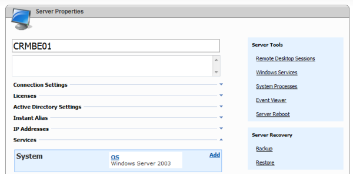

WSP Hosted CRM Solution Pre-Deployment Tasks
Translations:
Assumptions
This document assumes that background infrastructure (Windows Servers, Active Directory, CRM, DNS, etc) is configured correctly without errors. As a minimum Windows event logs, Support tools utilities (such as dcdiag and netdiag) now show critical errors. As a maximum - all services are deployed according to Microsoft guides, are carefully documented, there are no errors and warnings. CRM 4.0 is deployed according to "Microsoft DynamicsTM CRM 4.0 Deployment Walkthrough Guide for Service Providers", subsection 3.2 (pages 70 - 91). Internet Facing Deployment settings are tuned and verified.
General ideas
WSP Hosted CRM service allows to create and delete one CRM organization for every customer's organization. Website URL for every customer's CRM organization automatically forms in the following way: https://organization_id.crm.provider.com where "organization_id" is WSP customer's organization identifier and "crm.provider.com" - IFD Web Application Root Domain.
Deploying the Hosted Organizations module
In case it is already deployed (for example - for Exchange or SharePoint WSP solutions) - skip this step. In case it is not deployed - run steps described in this article. You can deploy this module either on the same computer as CRM server or another domain server that has WSP Server installed and connected to the same Enterprise server. Most likely Visio diagram describing solution components distribution is already created, use it to choose which server will host Organizations module.
Deploying the System (OS) service
If it is already deployed (for example - for Exchange, SharePoint WSP or classic webhosting solutions) - skip this step. You can deploy this service either on the same computer as CRM server or another server that has WSP Server installed and connected to the same Enterprise server. Most likely you (in case CRM is not the first server in your WSP environment) System (OS) service is already deployed. In case you have classic webhosting in your system and you are going to create mixed Webhosting/CRM plans - use System (OS) service from Webhosting server, not from CRM (or Exchange or WSS) server.
